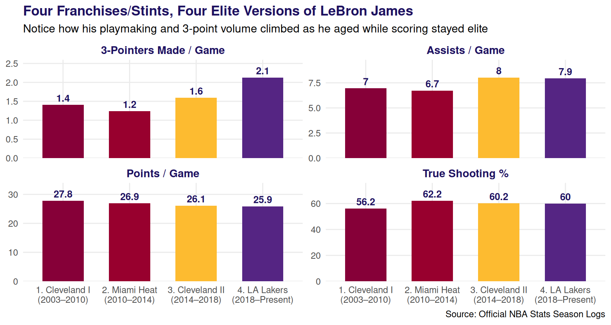

Longevity & Seasons
The Unprecedented 20+ Year Prime: Season-by-Season Against NBA Legends
In NBA history, greatness usually follows a familiar curve: two years of development, an eight-to-ten-year prime, and a steep late-career decline into a role player. LeBron James broke the aging curve. Across 23 NBA seasons, he has averaged 25+ PPG in 20 different seasons — more than any other player has even played at an All-Star level.
1. The Climb to 40,000+: Cumulative Career Scoring Trajectory
Tracking cumulative points by NBA season number reveals two things at once: LeBron matched or beat almost every legend’s pace right out of high school, and then kept climbing steeply long after every peer’s body gave out.
2. Defying Father Time: Scoring Average by Career Season
Critics sometimes call longevity records “compiler stats.” Look closely at Points Per Game (PPG) in Years 15 through 22+: Kareem, Kobe, Karl Malone, and Tim Duncan all dropped toward 10–19 PPG at the end of their careers. LeBron was still putting up 25 to 30 PPG nearly two decades into his NBA career.
3. Reinventing His Game Across Four Eras
One secret behind LeBron’s longevity is adaptability. As the NBA shifted toward pace-and-space shooting, LeBron transformed from an athletic slasher in his first Cleveland stint into a hyper-efficient post scorer in Miami, an all-court floor general in his return to Cleveland, and an elite high-volume three-point shooter and playmaker with the Lakers.
